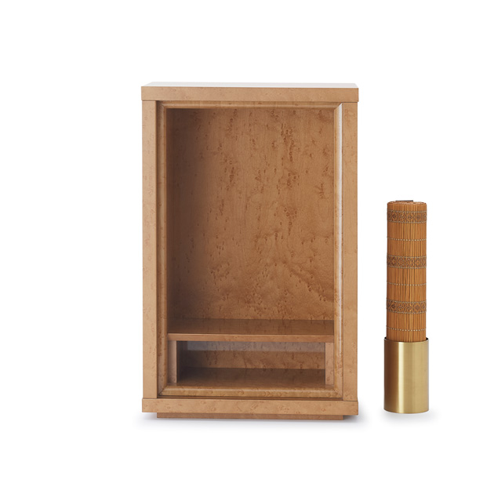
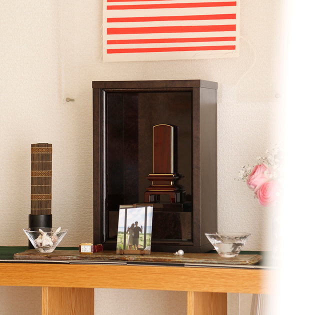
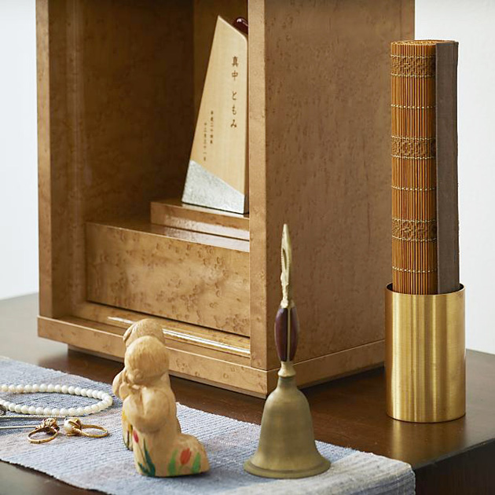
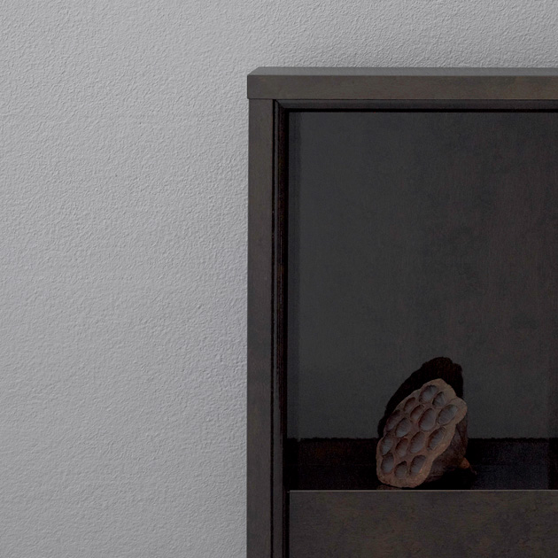
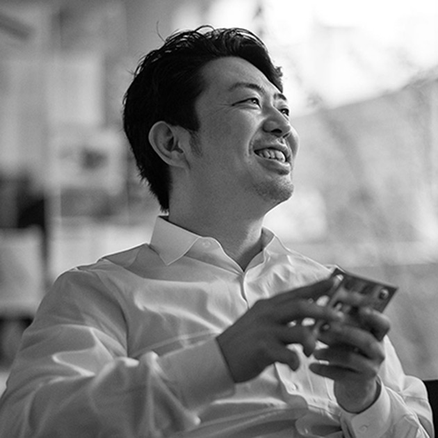
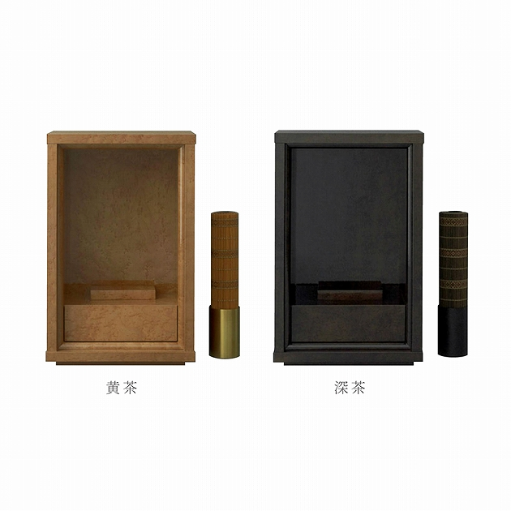

Do
間、個人化への導線
暮らしに間を置く道具を知り、買える場所へ行く。


color: 深茶 / 黄茶
-
深茶
¥187,000 税込
-
黄茶
¥187,000 税込
商品説明
現代の住まいになじむ美しい庵
偲ぶことの真ん中はいつの時代も変わることなく存在する。どんなお客さまにも、どんな暮らしにも寄り添える、偲ぶための商品を作りたくて、まなかがはじめて作ったのが『偲シリーズ』です。
一番大切なのは偲ぶこと。そのための空間は自由でいい。そう思って、お仏壇はこうあるべきの既成概念から脱却し、お仏壇の方から現代の暮らしに歩み寄り、現代の暮らしに寄り添えるお仏壇の開発をはじめました。
『偲庵』は、大切なものを納めるための形である“箱”にこだわりつつも、現代の住まいに溶け込むコンパクトさと美しさを追求しました。

現代の住まいに
丁度良い大きさ
コンマ数ミリ単位で幾度もデザインの検証を行いながら、現代の暮らしに最適なサイズを見つけました。小さくも本体には引き出しも付いており、ご供養に必要なものをしまうことも可能です。一見小さくても、中にはゆったりと大切なものを配置でき、直線で構成された装いは、和の空間にも、洋の空間にもよく似合います。

貴重なバーズアイを使用
素材には、高級家具や、高級車にも使われる希少材で、小鳥の目のように小さな斑点が並ぶ美しい木目のバーズアイ材（鳥目杢/ちょうがんもく）を採用しました。経年変化をした金色のように見える「黄茶」と、深く落ち着いたブラックとブラウンの中間にある「深茶」の２種類のお色をご用意しました。
扉のかわりには、竹とドビー織を組み合わせた、風の抜けるすだれを付属しています。
使用しない時は、専用のすだれ立てに丸めてすっきり収納できます。

職人が磨き上げた
他にない美しさ
見た目の美しさをいつまでも持続させるために、バーズアイ材の表面には保護膜を使用し、超光沢になるまで職人の手により一つひとつ丁寧に磨き上げています。高度な技術によって実現した工芸品でもあるお仏壇です。

物の歴史を、一歩進めるデザイナー
【PRODUCT DESIGN CENTER 鈴木啓太】
1982年愛知県生まれ。2012年に独立し、デザインオフィス「PRODUCT DESIGN CENTER」とブランド「THE」を設立しました。
サンテティエンヌ国際デザインビエンナーレ招待作家、HUBLOT DESIGN PRIZE 2016ファイナリスト（アジア人初）、グッドデザイン賞の最年少審査委員。
「お仏壇はこうあるべき」という枠から離れ、偲ぶことの真ん中と向き合うかたちを、偲壇で実現しました。

商品仕様
サイズ
本体:幅23.4cm×奥行14.7cm×高さ36.5cm
すだれ:幅23cm×長さ58.5cm
専用すだれ立て:直径 5cm×高さ8cm
本体重さ:4.8kg
仕上げ
本体:ウレタン仕上げ
すだれ:ドビー織・防炎
専用すだれ立て:（黄茶）薄鍋長仕上げ、（深茶）古代色仕上げ
素材
本体:メープル（バーズアイ）
すだれ:竹
専用すだれ立て:真鍮
生産地
本体:長野県下伊那郡
すだれ:大阪府河内長野市
すだれ立て:富山県高岡市
カラー
深茶
黄茶
デザイナー
鈴木啓太